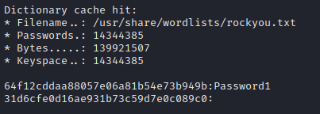

hashcat -m 1000 hashes /usr/share/wordlists/rockyou.txt --force
module 1000 for NTLM

Where balnk account has been disabled.
Theres a problem with my second account registering as teh same password. Have changed itg AGAIN. will need to investigate furhter
With all changes it should pull down Password3